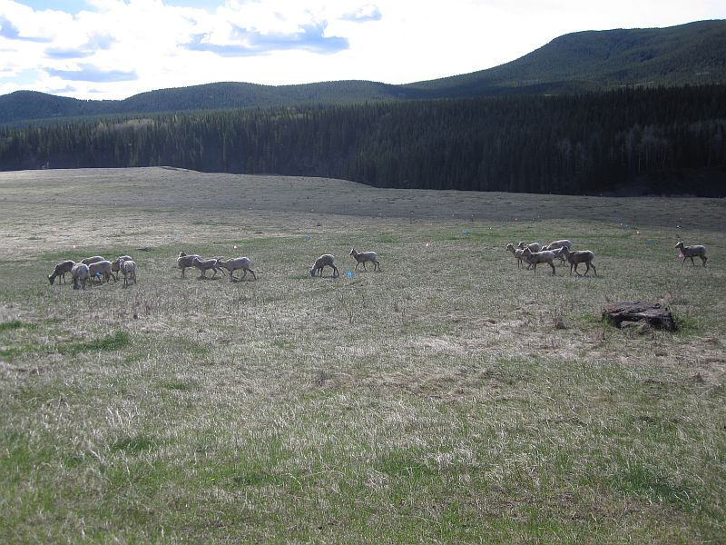
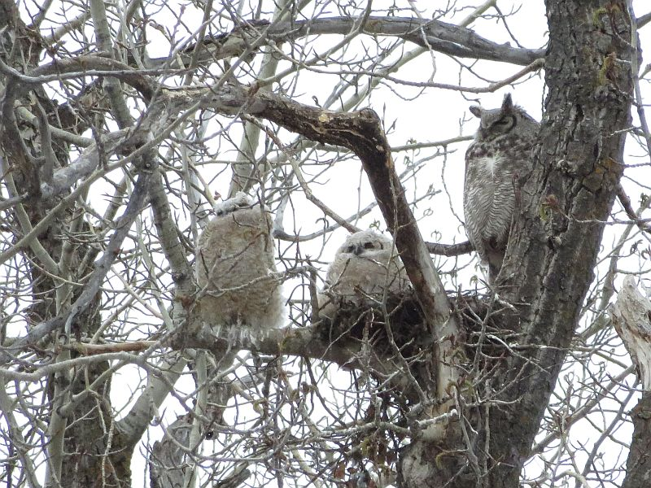
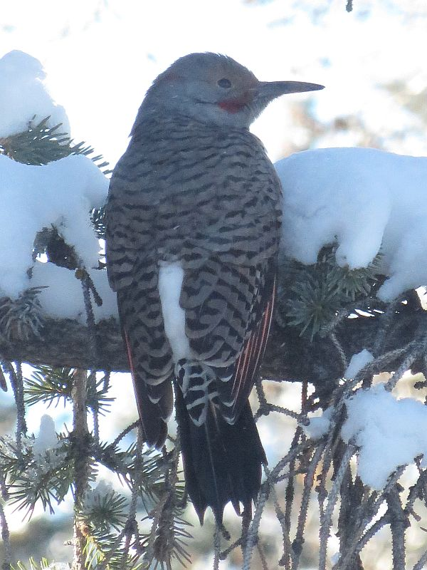
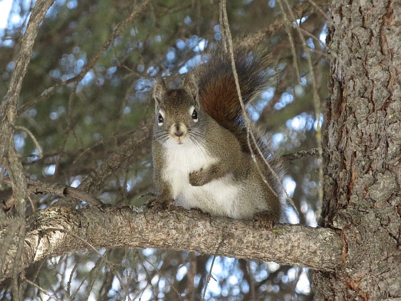
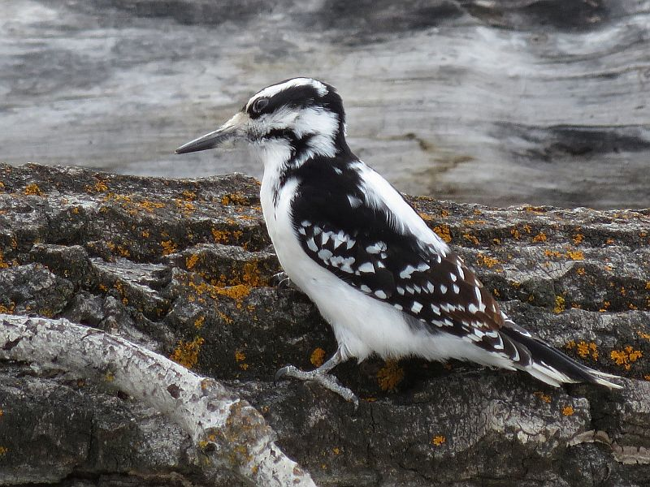
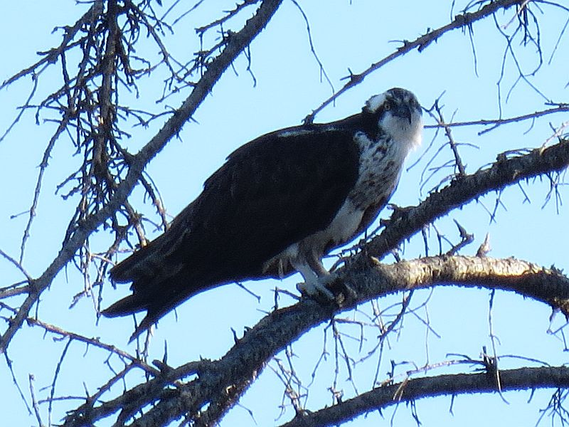
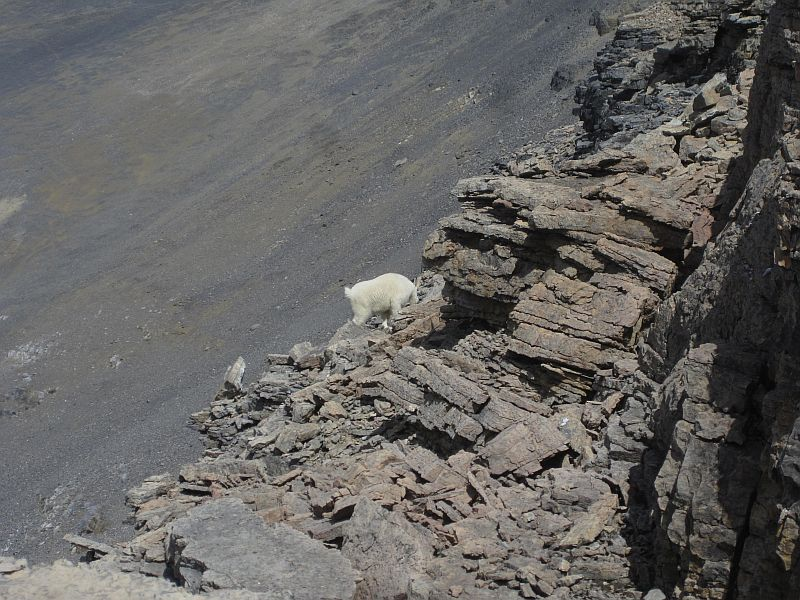
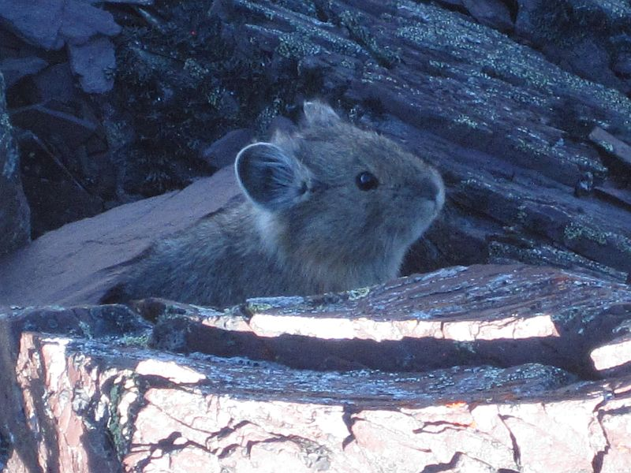

Rocky Mountain Bighorn Sheep graze in a meadow

A family of Great Horned Owls at their nest site

A Northern Flicker rests on a branch of a coniferous tree

A curious Red Squirrel watches over us

A Hairy Woodpecker looks for insects on a fallen tree trunk

An Osprey eats a meal while being harassed by Magpies

A lone Mountain Goat searches for food on a mountain outlier

Pikachu hides amongst purple-coloured rocks